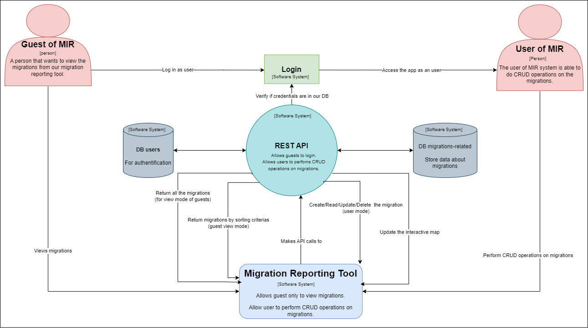
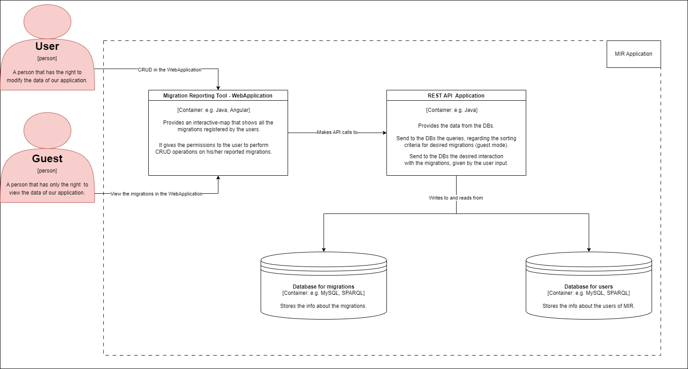
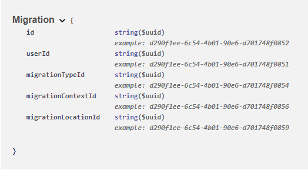
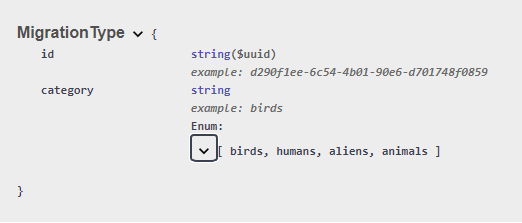
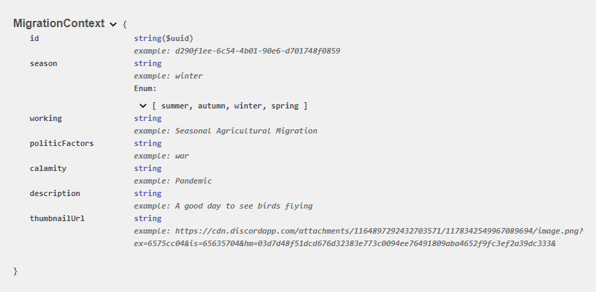
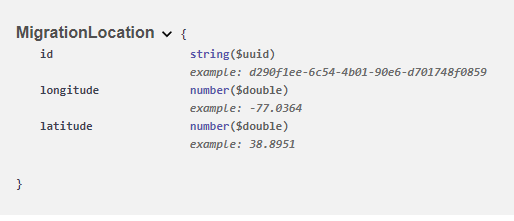
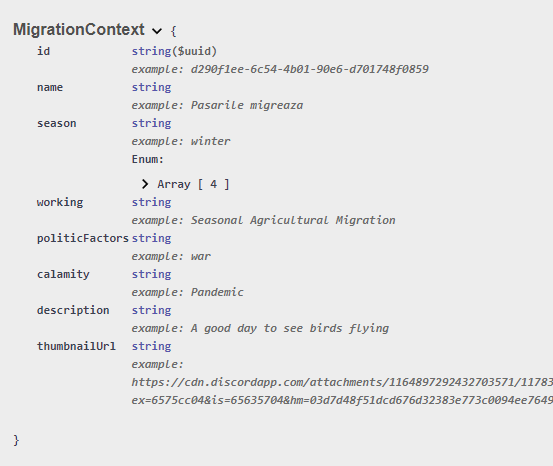
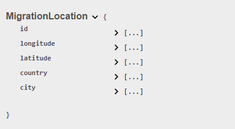
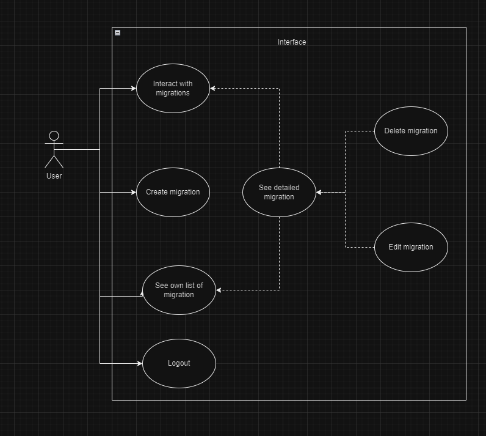
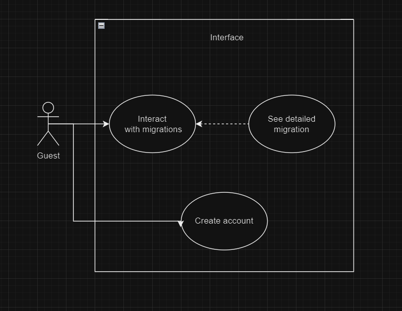

4. Functionalities
4.1 Internal Data
The internal data structures and models chosen for MIR will be designed to efficiently store and manage migration data. In this context, we think about the following models:
- Migration Object Model
- User Role-Based Model
In the context diagram, we want to show this type of hadling. In the below diagram, we show that we will divide the data into two main components: users and migrations (see the databases).
In the containers diagram, we focused on the interaction of clients, regarding their status (user or guest), in order to show the desired behaviour for our web application.
As seen in the diagrams above we'll be having the following functionalities an user can interact with throughout our website:
- Login
- Register
- Create a new migration
- Update a migration
- Delete a migration
- See a migration in details
- See a list of migrations
- Interact with an inteligent map that displays migrations
In the early stage of building the architecture with MIR, we have thought that the following models will suit perfectly the needs for our models:
- User
- Migration 
- MigrationType 
- MigrationContext 
- MigrationLocation 

- MigrationContext 
- MigrationLocation 
4.2. External Data Sources
MIR will use external data sources such as:
- Migration Data API - that will help us in managing the functionalities
- Geolocation Services - that will help us in showing the migrations on a map The interactive map will be implemented using Mapbox since it fits all criterias we are looking for.
- Stardog API This API is instrumental in managing core functionalities within MIR, such as updating, retrieving, and analyzing migration data. It serves as a crucial backbone for our data management strategy, ensuring that our repository remains up-to-date and accurate. Stardog has all the tools necessarry to upload a rdf schema, more than that, we could just create an endpoint to which our application could connect and make the necessarry API calls such: creating a migration, gathering all the migrations for a specific user and so on. All of these are possible thanks to a SPARQL endpoint implementation.
- AWS s3 API This API allows a user to upload a photo to the S3 bucket. The project doens't implement a secure way to communicate with the bucket, since the implementation shows the access key and the secret key. But, other than that, thanks to this we can make use of photos.
- Location Data Thanks to some databases we could figure out a way to download a file which contains all the countries with their cities, along with that we have longitute and latitute for every city on the Earth. We make use of this information when we create or update a migration, but not only that, also when we compute migrations for the interactive map.
4.3 Conforming with linked data principles
The solution implemented in MIR will use linked data principles, ensuring data interoperability and accessibility. For our project, we think at these possible solutions:
- Usage of Uniform Resource Identifiers (URIs) for data identification
- Linking data elements through RDF (Resource Description Framework)
We have proposed the following models for using RDFs:
- Ontology IRI We we're looking for something meaningful, clear and sugestive, and we've choosen: http://www.semanticweb.org/web-proj/MIR as for our IRI
- Class We have the following classes:
- Migration
- MigrationType
- MigrationLocation
- MigrationContext
- Object Properties - Relationships
- hasType Is the property of a migration that ensures a Migration must have a MigrationType.
- hasLocation Is the property of a migration that ensures a Migration must have a MigrationLocation.
- hasContext Is the property of a migration that ensures a Migration must have a MigrationContext.
- Attributes
- Migration attributes Migration class has the following attributes: id, userId, migrationLocationId, migrationContextId, migrationTypeId; where id is a unique identifier, userId is the link between the user that created the migration and migration, migrationLocationId is the link between the migrationLocation and migration, migrationContextId is the link between the migrationContext and migration and migrationTypeId is the link between migrationLocation and migration.
- MigrationLocation attributes MigrationLocation has the following attributes: id, country, city, longitude, latitude; where id is the unique identifier, country states the country of the migration, city states the city of the migration, longitude and latitude being the fields populated when both country and city have been selected.
- MigrationType attributes MigrationType has the following attributes: id, category; where id is the unique identifier and the category is useful for labeling a migration.
- MigrationContext attributes MigrationContext attributes has the following attributes: id, working, thumbnailUrl, season, politicFactors, name, description, calamity. All of them are attributes that put label on our migration.
4.4 Functionalities in depth
This section will describe the functionalities mentioned in 4.1- Login A guest can log in to become a user of the application in order to have access to some functionalities as: create a migration, delete a migration, edit a migration, see the list of migrations a user has created.
- Register A guest can register to become a user of the application in order to have access to some of the functionalities as: create a migration, delete a migration, edit a migration, see the list of migrations a user has created. A guest will be restrictioned from accessing every functionality on the website, but he will have access to: interaction with map, seeing one migration in detail.
- CRUD on migration This can only be performed by a user throughout our website. They will be able to create, read, update and delete a migration interacting with our interface.
- See a list of migrations This can only be performed by a user. This functionality will allow the user to see all the migrations he has created giving giving him the posibility of editing and deleting the migration.
- Interaction with inteligent map Either an user or a guest can have access to this functionality. They will be able to interact with this map to see what others have posted.
4.5 Use cases
This section will descrive the functionalities mentioned in the following diagrams   Guest:- Will be able to interact with inteligent map.
- Will be able to see detalied migration.
- Will be able to create a migration.
- Will be able to delete a migration.
- Will be able to see a migration.
- Will be able to edit a migration.
- Will be able to see a list of created migrations.
- Will be able to interact with inteligent map.
- Will be able to see detailied migrations.